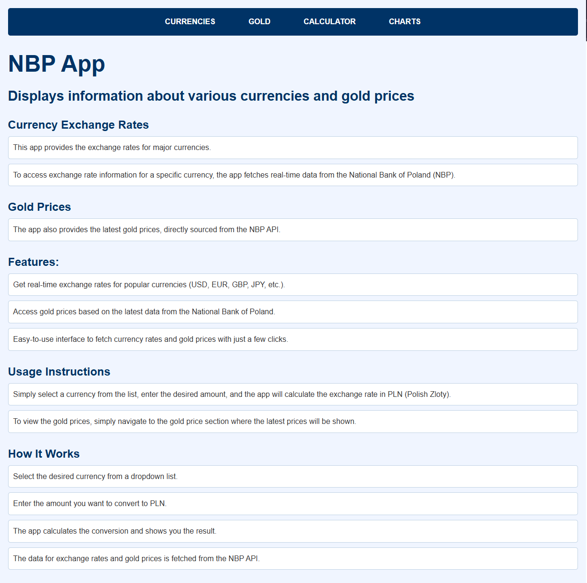
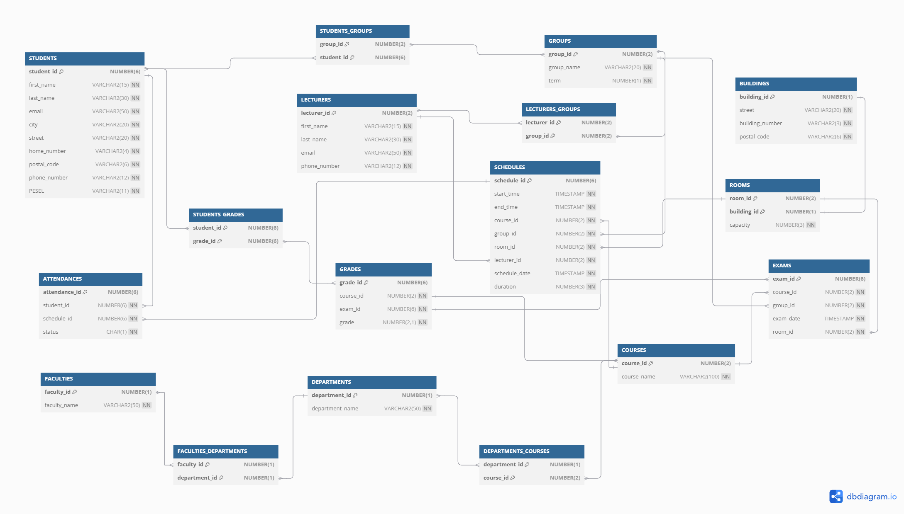
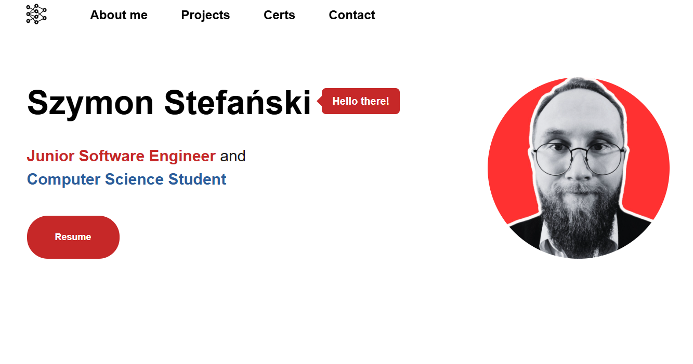
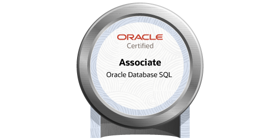

About me
Nice too meet you! My name is Szymon and I'm from Poland. I'm 4th year student of a Computer Science at the Polish-Japanese Academy of Information Technology. I am a naturally friendly person who can talk about everything and nothing. I'm interested in programming, databases and AI. Outside of my professional duties, I spend my time exploring emerging technologies and building side projects that challenge my logical thinking and creative problem-solving.
As a Web Specialist at a sports retail company, I managed and optimized the company’s WordPress-based online store, focusing on enhancing performance, user experience, and SEO to drive traffic and increase conversions. I applied my programming skills to implement custom features and automate technical tasks, utilizing JavaScript, HTML, and CSS for layout customization. Additionally, I was responsible for plugin management and the integration of marketing content to ensure a seamless digital storefront.
Projects
NBP app
A web application developed using Python, Flask,
JavaScript/HTML/CSS, with SQLAlchemy and SQLite for database
management, and RobotFramework for testing. It allows users to
check real-time currency exchange rates and gold prices, sourced
from the NBP API.

University Database Project
This project involves the design and implementation of a
database system for managing university operations using Oracle
Database and PL/SQL. The database tracks essential university
data, including students, courses, exams, grades, and student
groups. It features multiple views to analyze student
performance, course pass rates, and exam attempts, along with
ensuring data integrity through constraints and relational keys.

My personal webpage
This is my personal webpage - used to showcase myself, my skills
and projects. I used HTML, CSS and JavaScript to create this
webpage.

Certs

An Oracle Database SQL Certified Associate demonstrates understanding of fundamental SQL concepts needed to undertake any database project. Candidates have illustrated a depth of knowledge of SQL and its use when working with the Oracle Database server, and a working knowledge of queries, insert, update and delete SQL statements as well as some Data Definition language and Data Control Language, the optimizer, tables and indexes, data modeling and normalization.

The Oracle Cloud Infrastructure (OCI) Foundations certification is for individuals who intend to demonstrate fundamental knowledge of public cloud services provided by Oracle Cloud Infrastructure (OCI). This certification is for candidates with non-technical backgrounds, such as those involved in selling or procuring cloud solutions, as well as those with a technical background who want to validate their foundational-level knowledge around core OCI services.
The CCNA v7 Introduction to Networks (ITN) - The first course in the CCNA (Cisco Certified Network Associate) curriculum introduces the architectures, models, protocols, and networking elements that connect users, devices, applications, and data through the internet and across modern computer networks - including IP addressing and Ethernet fundamentals.
Introduction to concepts and fundamental skills for Linux users who run applications and services in Linux environments, but do not perform Linux system administration. Getting Started with Linux Fundamentals (RH104) is designed for IT professionals and business users who access Linux systems, and run Linux-based applications and services, but have little to no previous UNIX or Linux experience.
Focuses on the core administration tasks needed to manage Red Hat Enterprise Linux servers. This course is designed for IT professionals who want to become full-time Linux system administrators by learning key command-line concepts and enterprise-level tools. Red Hat System Administration I (RH124) provides a foundation for students who need to manage file systems, control software services, and configure network settings, serving as the first step for those pursuing the Red Hat Certified System Administrator (RHCSA) credential.
Red Hat System Administration II (RH134) is the second part of the RHCSA training track for IT professionals who have already attended Red Hat System Administration I. The course goes deeper into core Linux system administration skills in the installation and deployment of Red Hat Enterprise Linux, storage configuration and management, management of security features such as SELinux, control of recurring system tasks, management of the boot process and troubleshooting, basic system tuning, and command-line automation and productivity.